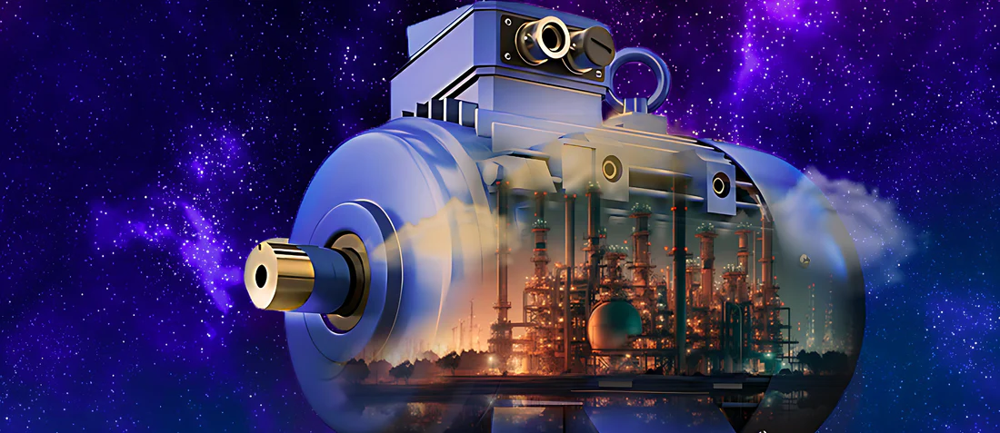
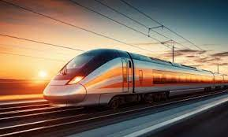

La función principal de un motor eléctrico es transformar la energía eléctrica en energía mecánica.
En otras palabras, toma la electricidad como entrada y produce movimiento rotatorio (o, en algunos casos, lineal) como salida.
Esta energía mecánica se utiliza para impulsar una gran variedad de máquinas y dispositivos en casi todos los aspectos de nuestra vida,
desde los electrodomésticos más pequeños hasta la maquinaria industrial más grande.
Cómo se logra?
Se basa en el principio del electromagnetismo.
Cuando una corriente eléctrica pasa a través de un conductor dentro de un campo magnético,
se genera una fuerza. En un motor eléctrico, esta fuerza se utiliza para crear un par
(una fuerza de giro) que hace rotar una parte llamada rotor,
mientras otra parte fija llamada estator genera el campo magnético.
Aplicaciones comunes de los motores eléctricos además de autos:
Electrodomésticos: Ventiladores, lavadoras, neveras, aspiradoras, licuadoras, etc.
Industria: Bombas, compresores, cintas transportadoras, maquinaria de producción, robots industriales, etc.

Transporte: Vehículos eléctricos, trenes, tranvías, bicicletas eléctricas, etc.

Herramientas: Taladros, sierras, lijadoras, etc.
Sistemas de climatización: Aires acondicionados, sistemas de ventilación.